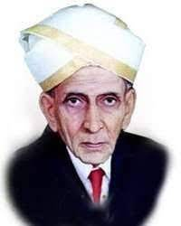

John Smeaton is known as the father of Civil Engineering
John Smeaton is known as the father of Civil Engineering
Mokshagundam Visvesvaraya is the first Indian civil engineer

Mokshagundam Visvesvaraya is the first Indian civil engineer
Shakuntala A.Bhagat is the first Indian women civil engineer

Shakuntala A.Bhagat is the first Indian women civil engineer
Golden Qudrilateral is the largest highway project in India and the fifth longest in the world.
It consists of 5,846km(3,633 miles).
Golden Qudrilateral is the largest highway project in India and the fifth longest in the world.
It consists of 5,846km(3,633 miles).
Indira Gandhi Canal is the lorgest canal in India and largest irrigation project in the world.
It is 649km long and runs through Harayana, Punjab and Rajasthan.
Indira Gandhi Canal is the lorgest canal in India and largest irrigation project in the world.
It is 649km long and runs through Harayana, Punjab and Rajasthan
Nagarjuna Sagar dam is the world's largest Masonry dam with a height of 124meters, build across Krishna river in Andhra Pradesh
Nagarjuna Sagar dam is the world's largest Masonry dam with a height of 124meters, build across Krishna river in Andhra Pradesh
Pir Panjal Tunnel is the largest Indian longest(10.96km) railway tunnel in Jammu & Kashmir
Pir Panjal Tunnel is the largest Indian longest(10.96km) railway tunnel in Jammu & Kashmir